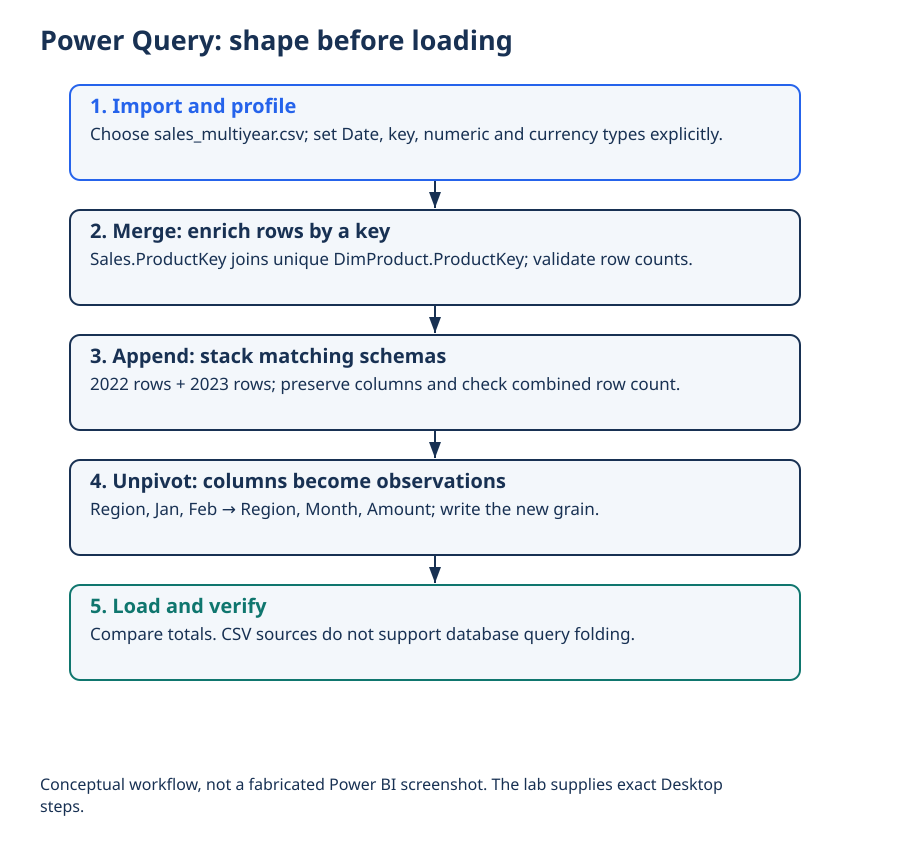

Lecture 20: Power BI Import & Model Prep
Get Data, Power Query essentials, type setting, relationships basics, and a pre-report checklist — so visuals rest on a trustworthy model.
1. Learning Objectives
- 1 Import CSV/Excel data into Power BI Desktop.
- 2 Use Power Query to clean types, split columns, and filter rows.
- 3 Set data types and hide technical columns.
- 4 Create basic relationships and mark a date table.
- 5 Complete a pre-report checklist before building visuals.
2. Get Data
Home → Get Data → Text/CSV/Excel/Folder. Prefer staging files in a known path. Document source and refresh expectations.
3. Power Query Essentials
- Promote headers; set data types explicitly
- Remove empty rows; filter error rows deliberately
- Split / merge columns when needed
- Replace values for standardizing categories
- Name steps clearly for auditability
4. Model Prep Basics
- One row meaning (grain) written down
- Dimension tables with unique keys
- Relationships 1:* from dim to fact
- Date table continuous and marked
- Hide key columns from Report view if needed
5. Pre-Report Checklist
- ☐ Sources documented
- ☐ Types correct
- ☐ Relationships validated with a simple matrix
- ☐ Date table marked
- ☐ No unexplained blank rows in key visuals
6. Practical
- Import sample_accidents.csv (or a sales sample).
- Fix types; create or mark a date dimension if applicable.
- Build one relationship and test a matrix.
- Write the grain sentence and checklist results.
7. Knowledge Check
Q1. Best place to set data types for reliability:
8. Summary
- Import → Power Query clean → model relationships → checklist → then visuals.
9. What’s Next
Lecture 21 — Power BI Visualization builds the report layer: core visuals, formatting, slicers, multi-page design, and publish overview.
Worked practice: Shape data before loading
Follow the Desktop lab: set data types; profile the complete dataset; merge a unique product dimension; append compatible yearly rows; unpivot a monthly table; document each step.
Interpretation check: CSV sources do not offer database query folding. Verify folding only for supported connectors and transformations. Preserve null indicators before replacement.
Download runnable/guided lab: L20 PowerBI Power Query Lab
Setup, all labs, datasets, DAX measures and capstone guidance · Interactive retail teaching report
Power Query: shape before loading


Interpret: How does append differ from merge?
Append adds rows; merge joins columns by keys.
Read diagram labels (mobile text)
- Power Query: shape before loading
- 1. Import and profile
- Choose sales_multiyear.csv; set Date, key, numeric and currency types explicitly.
- 2. Merge: enrich rows by a key
- Sales.ProductKey joins unique DimProduct.ProductKey; validate row counts.
- 3. Append: stack matching schemas
- 2022 rows + 2023 rows; preserve columns and check combined row count.
- 4. Unpivot: columns become observations
- Region, Jan, Feb → Region, Month, Amount; write the new grain.
- 5. Load and verify
- Compare totals. CSV sources do not support database query folding.
- Conceptual workflow, not a fabricated Power BI screenshot. The lab supplies exact Desktop
- steps.
Your reading progress
Completion is self-reported reading progress, not a mastery score. Use the lab and interpretation checks to assess understanding.